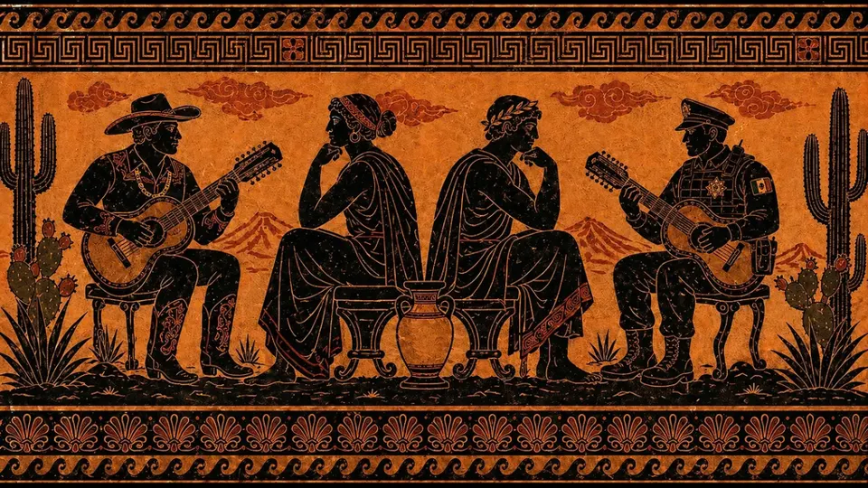
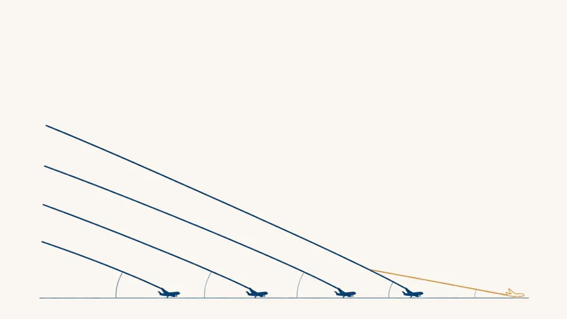

Llevemos la mejor literatura en español a tu universidad.
¡Queremos colaborar!
Los alumnos no han dejado de leer: leen más que nunca, pero en línea y en espacios donde predomina el inglés. Perpetuo publica periodismo narrativo, ensayo, escritura creativa y pódcast en español, tres veces por semana. Te proponemos un año de acceso gratuito para tu comunidad.
- +500textos publicados
- ~50,000lectores al mes
- 6,000suscriptores al newsletter
- 79países, los 21 de habla hispana
Un año de Perpetuo, gratis, para tu comunidad.
Un piloto masivo: abrimos Perpetuo completo a los alumnos y docentes que tu universidad elija, durante doce meses.
-
Acceso gratuito por un año
Para alumnos, docentes o ambos. Sin costo para la universidad ni para quien lee.
-
Todo nuestro contenido
Crónicas de largo aliento, análisis de coyuntura sobre todo el mundo hispanohablante y un semanario de literatura.
-
Pláticas y talleres de escritura
Colaboramos con la comunidad en charlas o talleres, con nuestro equipo editorial y nuestros autores.
-
Sus textos, en la revista
Los alumnos pueden mandarnos sus textos y los consideramos para publicarlos en Perpetuo.
Las historias que nadie más está contando.
Crónicas de largo aliento escritas por autores premiados. Así se ve lo que publicamos.

Dos formas de narrar la violencia
Dahlia de la Cerda
Longlist del International Booker Prize
Haití, la revuelta eterna
Juan Martínez d'Aubuisson
Premio Ortega y Gasset 2024 · Premio Gabo 2025

El sobreviviente contrafáctico
Javier Sinay
Premio Gabo 2015
Todo lo que trae la revista · tres veces por semana
- ES
Estelares
Crónica de largo aliento.
- AN
Los anteojos
Ensayo y análisis de coyuntura.
- CR
El creativo
Semanario de literatura: relatos y poemas.
- MC
Masa Crítica
Pódcast con Juan Villoro, Leo Zuckermann y más.
- RE
Recomendaciones
Libros, cine y cartelera cada mes.
- +500
Archivo completo
Todo lo publicado, abierto durante el piloto.
¡Es hora de que el español se atreva a más!
Para formar lectores críticos en español hace falta periodismo y cultura de calidad en nuestro idioma, y encontrar a los lectores donde ya están: en el mundo digital.
Hablamos desde el español
Cubrimos lo global desde una perspectiva hispana. Material directo para comunicación, ciencias sociales y humanidades.
Una puerta de entrada para sus alumnos
Perpetuo publica voces nuevas. Para muchos estudiantes puede ser su primera publicación remunerada.
Las mejores historias, con los mejores autores
Reportamos las historias en español que nadie está contando, con autores premiados.
Eventos y oportunidades
Perpetuo es una comunidad cultural: organizamos encuentros y actividades para nuestros lectores.
Un archivo que se puede usar en clase
Más de 500 textos, con acceso completo durante todo el piloto.
Hecho para leerse en pantalla
Llega al correo y se lee en el teléfono, donde los alumnos ya leen todos los días.
Un lector joven, bicultural y profundamente literario.
- Menor de 35 años
- Con maestría
- Habla español e inglés
- Lee The New Yorker, The Atlantic y El País
Perpetuo nace digital
- 1976El País, Proceso
- 1978Nexos
- 1999Letras Libres, Gatopardo
- 2025Perpetuo
Las grandes publicaciones en español nacieron en papel. Perpetuo nace digital: pensada desde el primer día para leerse en internet. Respaldada por OSV y Emergent Ventures.
Cuatro pasos y tu comunidad ya está leyendo.
El trabajo operativo corre por nuestra cuenta. A la universidad le pedimos solo el primer paso.
-
1
Nos dicen a quién activar
Hay dos caminos; la universidad elige el que le acomode.
Una listaNos comparten los correos de los alumnos o docentes que participarán.o Un enlace abiertoLes mandamos un link de acceso para que cualquiera de la comunidad se registre. -
2
Los damos de alta en Perpetuo
Activamos su acceso completo en la plataforma. Empiezan a recibir Perpetuo en su correo y pueden leer todo el archivo.
-
3
Medimos y les reportamos
Monitoreamos la activación y el uso, y entregamos un reporte a la universidad.
- Activación de accesos
- Uso y lectura
-
4
Plática o taller Si les interesa
Organizamos con ustedes una plática o un taller de escritura para la comunidad.
Agendemos una reunión.
En una llamada definimos a quién activamos y cuándo arrancamos. Escoge el horario que te acomode: son 30 minutos.
Agendar llamadaMientras tanto, puedes leer Perpetuo en perpetuo.global.